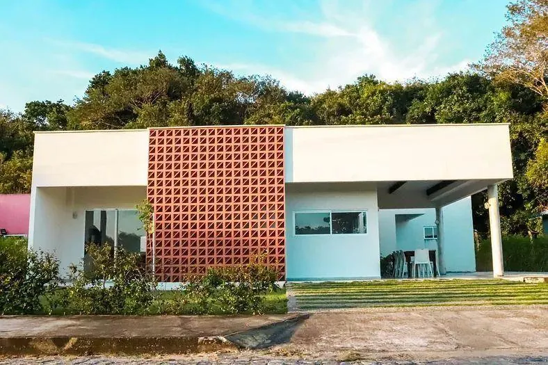
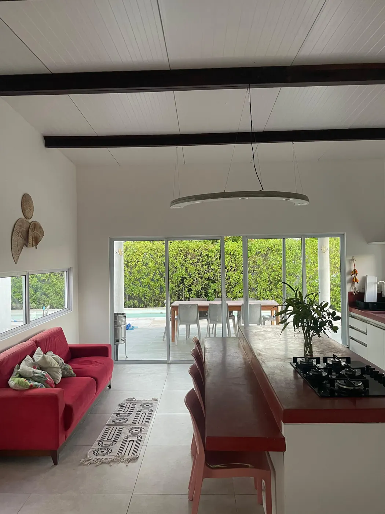
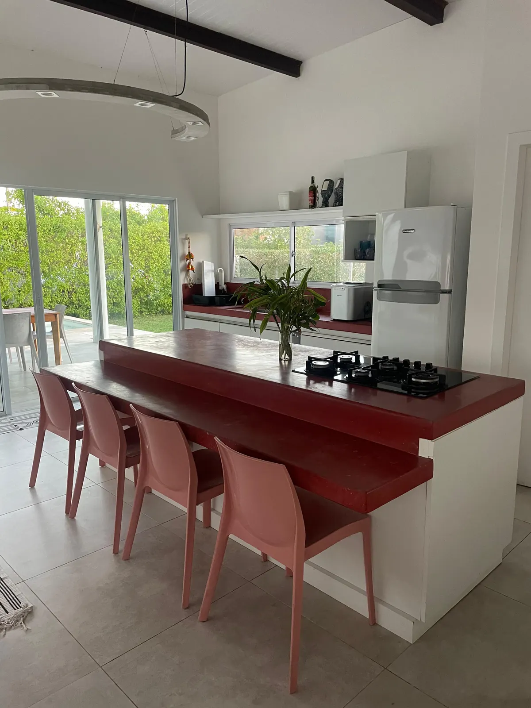
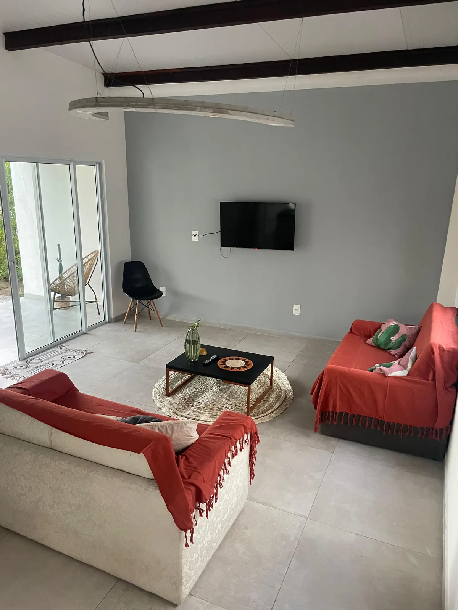
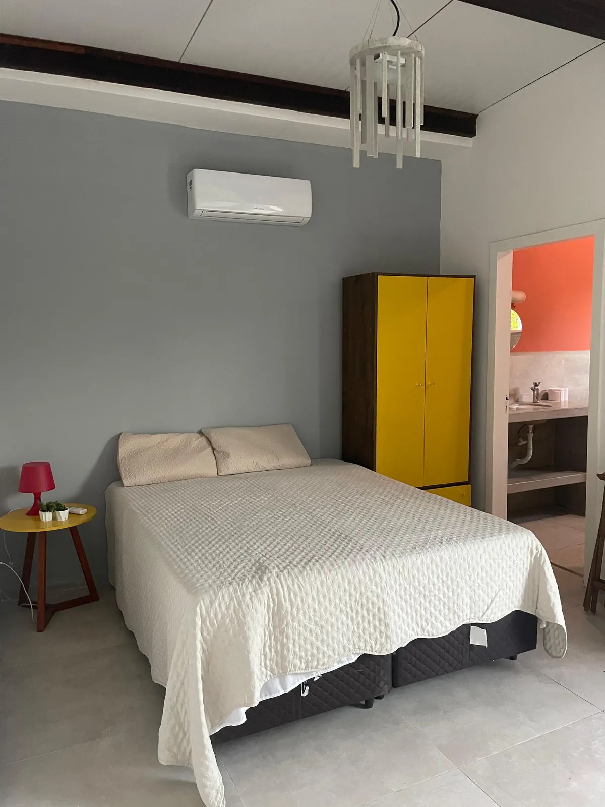
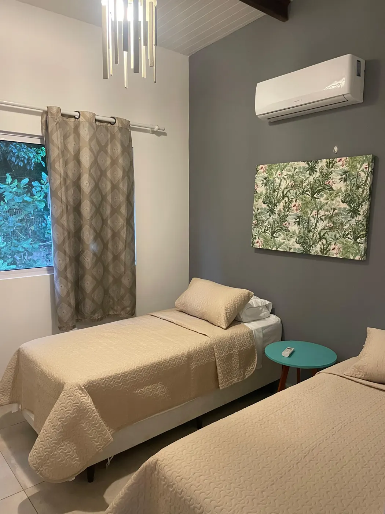
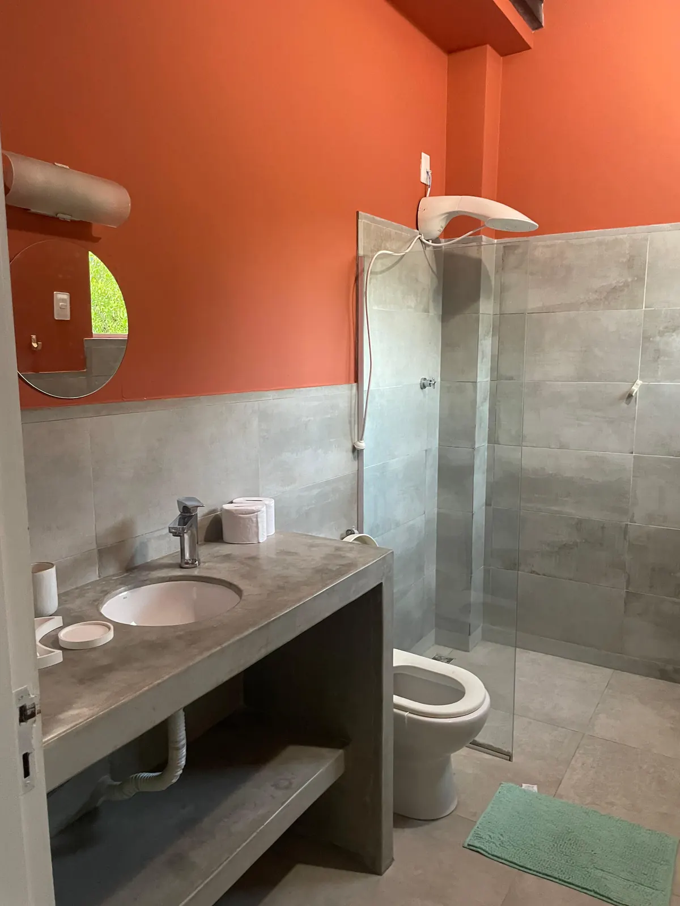
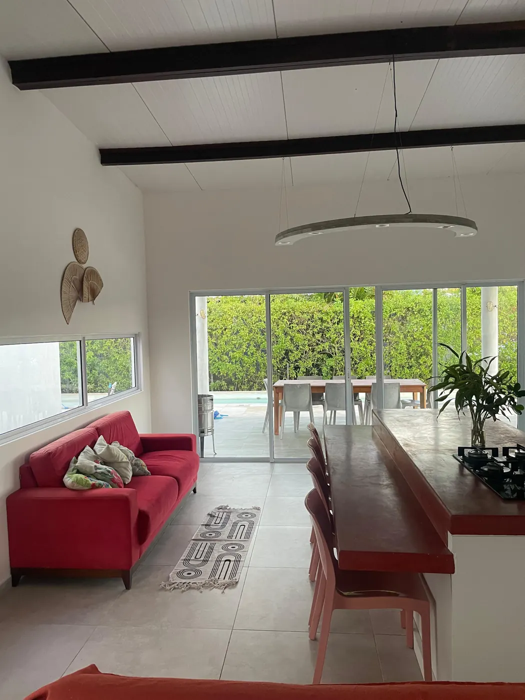
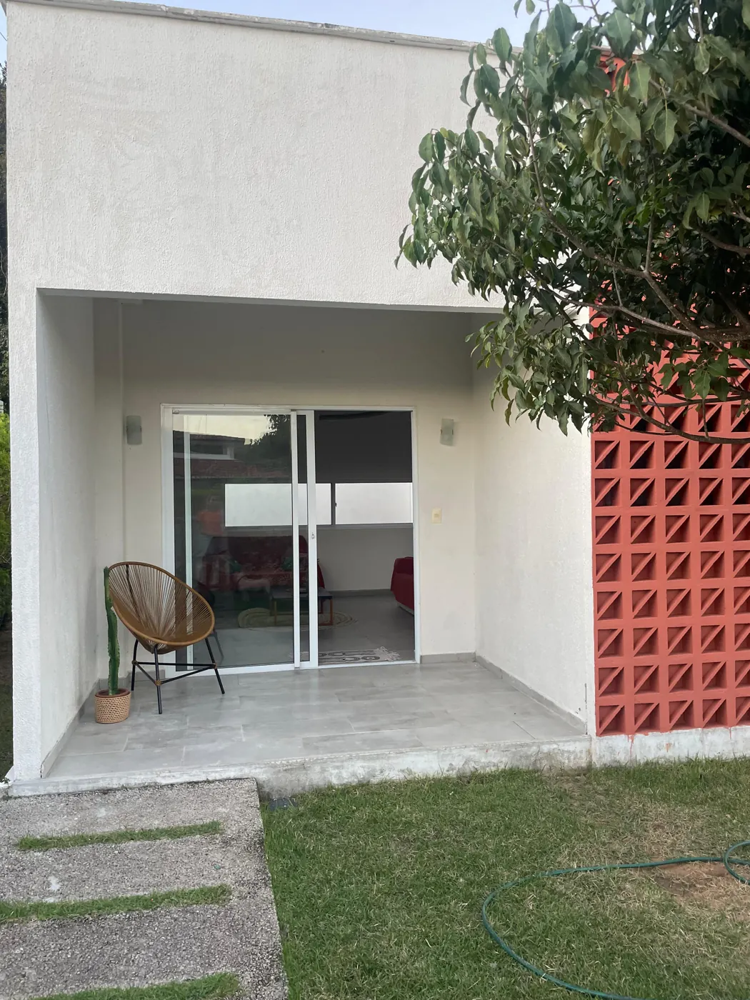

Casa Terracota – casa com piscina para 7 pessoas na Praia da Pipa
Arquitetura moderna com cobogós terracota, piscina privativa e varanda gourmet integrada à sala e à cozinha.












7hóspedes
3quartos (1 suíte)
2,5banheiros
Simpiscina
Sobre a Casa Terracota
A Casa Terracota é uma casa de temporada em Pipa pensada para famílias e grupos de amigos que querem espaço, privacidade e conforto a poucos minutos das praias mais bonitas do litoral potiguar.
A sala, a cozinha e a varanda gourmet formam um único ambiente aberto para a piscina, com pé-direito alto e muita luz natural. São 3 quartos com ar-condicionado — sendo 1 suíte — e 2,5 banheiros, acomodando até 7 pessoas.
Fica no Condomínio Pipa Natureza, em meio à mata atlântica, com trilha de cerca de 20 minutos até a Praia do Madeiro, famosa pelos golfinhos e pelo mar calmo.
Camas: 1 cama de casal e 5 de solteiro.
Comodidades
- Piscina privativa
- Varanda gourmet com mesa para 8
- Ar-condicionado nos quartos
- Cozinha completa com bancada
- Wi-Fi
- Smart TV
- Jardim gramado
- Vaga para 1 carro
- Roupa de cama e banho
- Limpeza incluída
Check-in a partir das 14h · Check-out até 11h
Condomínio Pipa Natureza, Quinta do Sol, Casa 50 – Praia da Pipa, Tibau do Sul/RN
Outras casas em Pipa